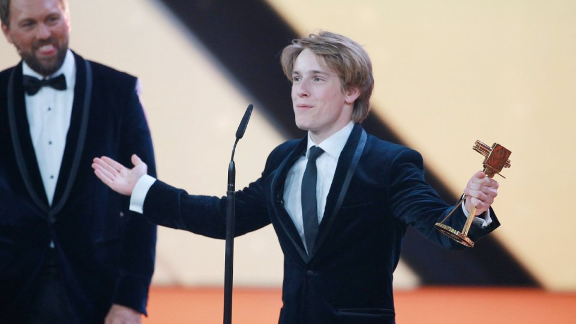
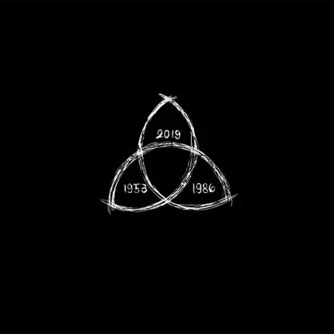
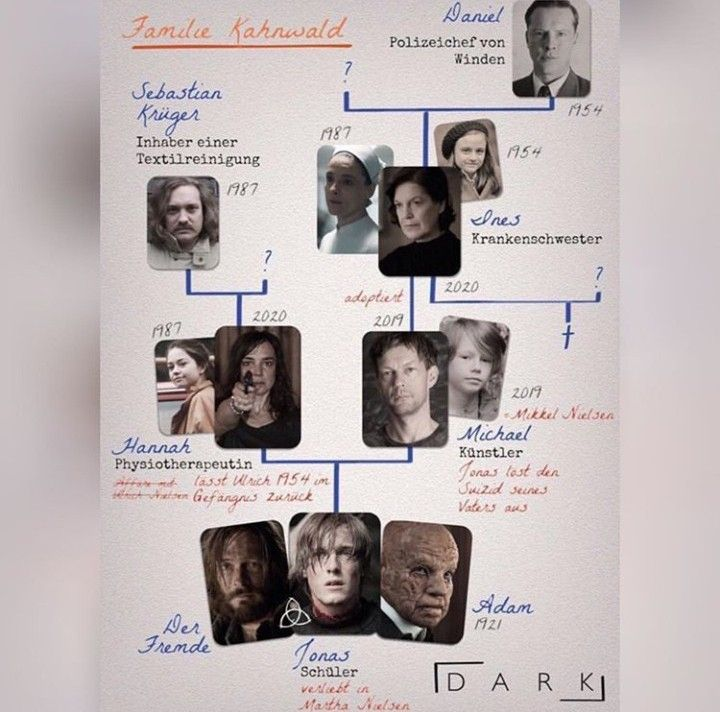
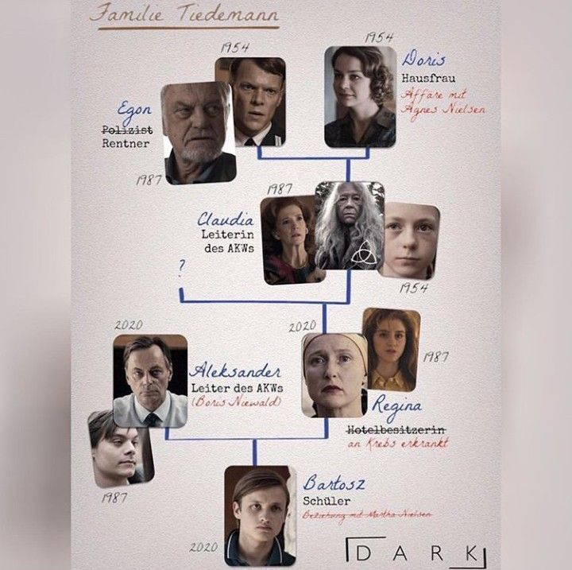
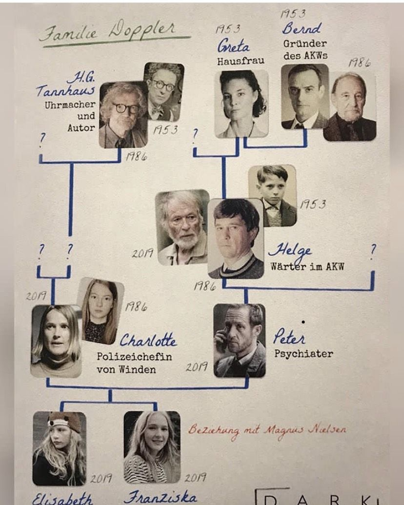
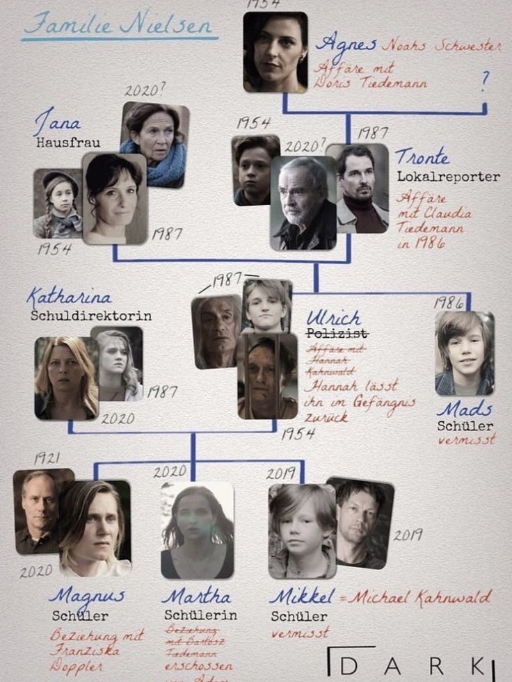
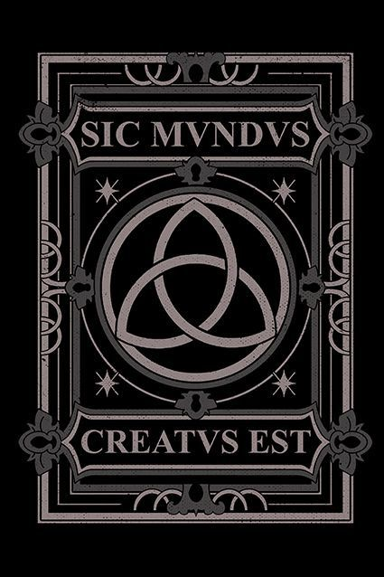

Eventos Importantes
Entrevistas
- En 2017, 'HeyUGuys' entrevistó a los actores Louis Hofmann y Lisa Vicari sobre el estreno de Dark.
- En 2020 antes del estreno de la tercera temporada, Louis Hofmann fue entrevistado por NileFM, donde habló sobre el desarrollo de la serie y su evolución como actor dentro de la misma.
Premios y Reconocimientos
- Premios Grimme 2018: Dark fue galardonada con el prestigioso Premio Grimme en la categoría de ficción. Este reconocimiento destacó el trabajo del equipo creativo y del elenco, incluyendo a Louis Hofmann, Oliver Masucci y Angela Winkler, quienes fueron premiados como representantes del conjunto del elenco. 
- Nominaciones a la Goldene Kamera 2018: La serie recibió tres nominaciones en estos premios alemanes: Mejor Serie, Mejor Actriz para Karoline Eichhorn (Charlotte Doppler) y Mejor Actor para Oliver Masucci (Ulrich Nielsen). Aunque no resultaron ganadores en estas categorías, las nominaciones reflejan el reconocimiento crítico que obtuvo la serie en su país de origen.
Detras de Camaras
Un vistazo al proceso de producción de la serie, incluyendo entrevistas con el elenco y el equipo técnico, mostrando cómo se creó el mundo de Dark.
Curiosidades
- En cada temporada, el número 33 se repite constantemente (años entre los ciclos, relojes con ese número, etc.). Esto se basa en el calendario solar-lunar, en el cual cada 33 años ambos se sincronizan. 
- El Arbol Genealogico imposible: La familia Nielsen-Kahnwald-Doppler es cíclica e imposible, ya Jonas es su propio abuelo indirectamente, y Charlotte es hija de su propia hija. El guion de la serie fue tan complejo que los actores recibieron esquemas temporales y árboles genealógicos para entender en qué línea de tiempo y edad estaban sus personajes.    
- El emblema de la Triqueta: Aparece en el libro de viajes en el tiempo y en la máquina del tiempo. Representa la interconexión del pasado, presente y futuro, además de tener raíces celtas y cristianas. 
- El nombre “Winden”: “Winden” no es una ciudad real en Alemania. Sin embargo, el nombre viene del verbo alemán "winden", que significa "retorcer" o "enroscar", una referencia clara a los bucles temporales.